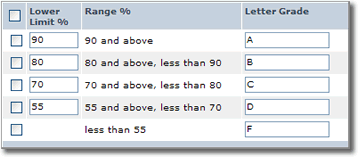

Multi-way Branching
Often, your programs will need to handle many different conditions: in one case, you should "turn left", in another you should "turn right", while in a third, it should go "straight ahead". When you have more than two branches, there are three general techniques to use:
- Sequential if statements should be used when each test depends on the results of a previous test. The tests are performed sequentially.
- Nested if statements are used when the calculations or actions you need to carry out depend on several different conditions, of different types.
- switch statements allow you to easily write "menu style" code. You can place each action in a block (called a case block), and directly jump to (and execute) that block whenever the user enters the appropriate selection.
One sequential comparison which you're all familiar with is the "letter grading scale" used to assign marks in school, (including in this course), similar to that shown here:

Typically, your letter grade is based on a percentage representing a weighted average for all of the work you've done during the term. To select one course of action from many possible alternatives (which is the case here), you employ sequential if statements following this pattern:
if (condition-1) // condition-1 is true
statement
else if (condition-2) // condition-1 false, condition-2 true
statement
...
else if (condition-n) // conditions 1-n false, condition-n true
statement
else // if no conditions are true
statementThis is called the "Multiple Selection" pattern. It is also known as a "ladder style" if statement, because each of the conditions are formatted one under the other, like the rungs on a ladder.
 This course content is offered under a
CC
Attribution Non-Commercial license. Content in this course
can be considered under this license unless otherwise noted.
This course content is offered under a
CC
Attribution Non-Commercial license. Content in this course
can be considered under this license unless otherwise noted.